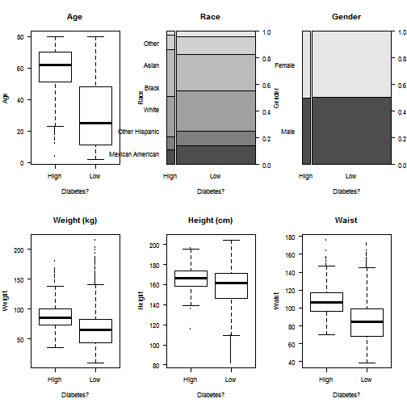

Preliminary Diabetes Risk Assessment
Thanapol Tanprayoon
Problem Statement
- Estimated 23.6 million patients in US and is the 7th leading cause of death.
- Risk awareness lead to better self-management.
- Therefore, this application aims to preliminarily assess Diabetes risk from their basic info such as ages, gender, etc..
About the Dataset
- National Health and Nutrition Examination Survey (NHANES) 2011-2012
- 2 years survey by National Center for Health Statistics
- Contain demographical, behavioral, laboratory, and dietary data vs their Health data (various disease & problems).
- This project will focus on basic info such as ages and gender vs their diabetes health profile.
Exploratory Analysis

Work Flow
- Import data tables (SAS XPT) into R
- Merge data tables by matching ID
- Data preprocessing
- Fit and Evaluate models
- Create App that take user input to fit into the model
Findings and Discussion
- Age, waist circumference and Ethnicity has high impact on Diabetes risks.
- There are some laboratory and questionnaire data featured in the NHANES survey which might be useful to improve the model.